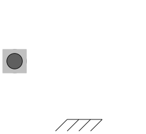
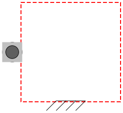
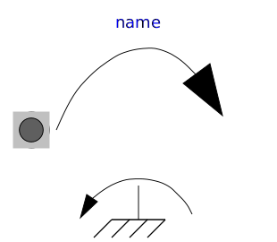
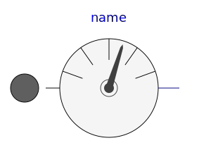
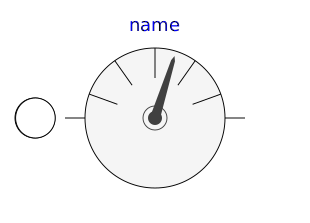

This package contains connectors and partial models for 1-dim. rotational mechanical components. The components of this package can only be used as basic building elements for models.
| Name | Description |
|---|---|
| 1-dim. rotational flange of a shaft (filled square icon) | |
| 1-dim. rotational flange of a shaft (non-filled square icon) | |
| Support/housing of a 1-dim. rotational shaft | |
| InternalSupport | Adapter model to utilize conditional support connector |
| PartialTwoFlanges | Partial model for a component with two rotational 1-dim. shaft flanges |
|  PartialOneFlangeAndSupport | Partial model for a component with one rotational 1-dim. shaft flange and a support used for graphical modeling, i.e., the model is build up by drag-and-drop from elementary components |
|
|
Partial model for a component with two rotational 1-dim. shaft flanges and a support used for graphical modeling, i.e., the model is build up by drag-and-drop from elementary components |
| Partial model for the compliant connection of two rotational 1-dim. shaft flanges | |
|
|
Partial model for the compliant connection of two rotational 1-dim. shaft flanges where the relative angle and speed are used as preferred states |
| PartialElementaryOneFlangeAndSupport | Obsolete partial model. Use PartialElementaryOneFlangeAndSupport2. |
|
|
Partial model for a component with one rotational 1-dim. shaft flange and a support used for textual modeling, i.e., for elementary models |
|  PartialElementaryTwoFlangesAndSupport | Obsolete partial model. Use PartialElementaryTwoFlangesAndSupport2. |
|
|
Partial model for a component with two rotational 1-dim. shaft flanges and a support used for textual modeling, i.e., for elementary models |
|
|
Partial model to transform rotational into translational motion |
|  PartialTorque | Partial model of a torque acting at the flange (accelerates the flange) |
|  PartialAbsoluteSensor | Partial model to measure a single absolute flange variable |
|  PartialRelativeSensor | Partial model to measure a single relative variable between two flanges |
| Partial model of Coulomb friction elements |